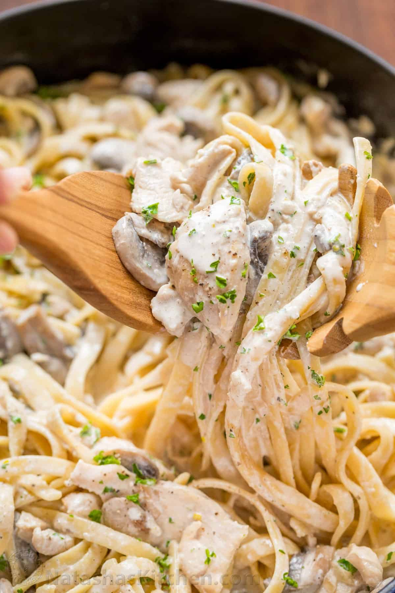

Back to Recipes
Chicken Fettuccine Alfredo

Classic creamy chicken fettuccine alfredo
Mom’s creamy Chicken Fettuccine Alfredo has been a family favorite for years. Classic Chicken Alfredo is a feel good comfort food, so creamy but light!
Ingredients
- 2 pounds chicken breast
- 3/4 lbs fettuccine pasta
- 1 lb white mushrooms, thinly sliced
- 1 small onion, finely chopped
- 3 cloves garlic, minced
- 3 1/2 cups half and half
- 1/4 cup parsley, finely chopped
- 1/4 teaspoon black pepper
- 1 teaspoon sea salt
- 3 tablespoon olive oil, divided
- 1 tablespoon unsalted butter
Steps
- Cook fettuccini in a pot of salted water (4 qts water, 1 Tbsp salt,) according to package instructions then drain and set aside.
- Meanwhile, slice chicken into strips and season all over with salt and pepper. In a large skillet, heat 2 Tbsp olive oil over medium/high heat and sauté chicken until lightly golden and cooked through (5 min). Remove chicken from the pan and cover to keep warm.
- In the same pan over medium/high, heat 1 Tbsp olive oil and 1 Tbsp of butter. Add onion and sauté 3 min until soft. Add sliced mushrooms and sauté until soft (5-7 min), stirring frequently. Add garlic and sauté 30 seconds, stirring constantly.
- Add half-n-half and simmer over medium/high heat 8-10 min, or until beginning to thicken. Add chicken back to the pan, add 1/4 cup parsley and season sauce to taste (1/2 to 1 tsp salt and 1/4 tsp pepper).
- Add cooked pasta and stir to combine. Heat another minute until warmed through then turn off the heat, cover and let rest 10-15 minutes.
- Serve garnished with parsley and enjoy!